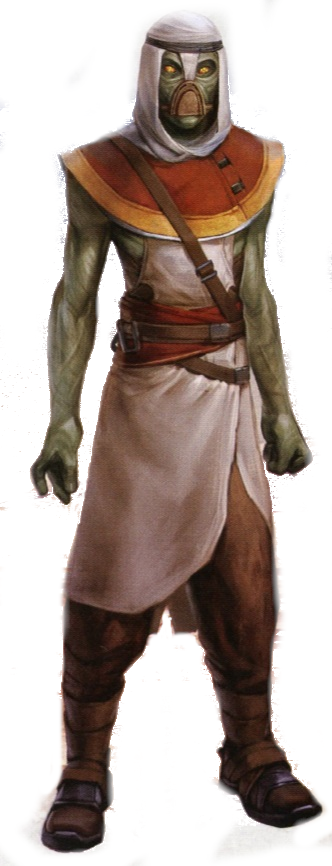

Kyuzo
Special Abilities: Kyuzo begin the game with one rank in Coordination. They still may not train Coordination above rank 2 during character creation.
Dense Musculature: Kyuzo are adapted for Phatrong’s relatively high gravity, and can make impressive bounding leaps on most other worlds. Once per round as a maneuver, a Kyuzo may suffer 3 strain to leap horizontally or vertically to any location within medium range.
Kyuzo are lanky, bipedal humanoids who hail from the world of Phatrong. Their frequently slender physique belies their formidable strength and surprising agility. Kyuzo are not a prominent species in the galaxy at large, but some travel extensively for business, trade, and exploration.
There are many social and political organizations on their homeworld Phatrong, but one particularly noteworthy cultural phenomenon is that of clovocs, groups that maintain law and order in specific regions. The members of the most elite clovocs on Phatrong are renowned for their skill and honor, and are thus valued by military recruiters, underworld organizations, and other groups that require skilled fighters.
Kyuzo are green-skinned, and display hues ranging from lighter olive shades to deep blue-green colors. They are bipedal, with thin arms and legs that conceal their considerable strength. Their hands have four digits. Due to the uncommon makeup of their homeworld’s atmosphere, Kyuzo frequently wear filter masks when in a galactic standard habitable environment. Though going without these masks isn’t fatal, doing so makes Kyuzo ill in a short time, interferes with their ability to concentrate, and slows them down considerably. Like many species, Kyuzo span a broad range in terms of height and build, with some members of the species towering over most humans and others considerably smaller in stature.
Interestingly, there are two primary phenotypes within the Kyuzo population; some have compound eyes, while others have eyes with pupils akin to those of humans. The exact genetic history behind this divergence is known to few non-Kyuzo scholars, but the two groups are genetically compatible, with offspring inheriting one trait or the other from a parent.
The Kyuzo are a highly political species. Starting with early city-states, the Kyuzo developed societies that spanned considerable geographic areas. Most Kyuzo identify as members of a particular country or region. Separate from these governments are the clovocs, which are organizations of warriors and other combatants that have their own traditions and rules outside of the political regions they inhabit.
At their best, the clovocs comprise noble fighters standing for what is right or just. At their worst, they are bands of vile mercenaries or criminals who are as formidable as they are greedy. Clovocs range in size from a few dozen members to thousands of individuals. All forms of Kyuzo government make deals with the clovocs to provide security and military forces. The politics behind the successful hiring of a clovoc are complex and sometimes outright corrupt. Many a government has been toppled when a clovoc abandoned it for better pay elsewhere or as an extreme form of protest over that government’s actions, though few clovocs would abandon a battlefield for such reasons when actual fighting is underway.
Some clovocs encourage their members or even entire branches to work offworld as mercenaries, while others forbid this practice. While most Kyuzo are not actually members of a clovoc, these organizations nonetheless hold an important place in Kyuzo culture, and are often romanticized in works of song, literature, and other art. Though the clovocs are not monolithic on Phatrong—some regions have more traditional governance structures with integrated militaries—they are common in several of the largest nations. Further, because many Kyuzo who travel offworld are members of a clovoc, these warrior orders are one of the most widely recognized elements of Kyuzo culture in the galaxy at large.
Phatrong is an Outer Rim world, in the galactic vicinity of Yavin and the Gordian Reach. It is terrestrial, with vast oceans divided by thin, mountainous, roughly linear continents that stretch between the planet’s poles. Some mountain ranges are bordered by wide plains and low hills. Others rise steeply out of the water, forming fjords and long inland canyons.
Kyuzo cities are scattered throughout the continents. Most continents and major islands are their own political units, though they do form a loose confederation that once elected the planet’s Republic and Imperial Senators—before the dissolution of the Senate, at least. The office of the local Imperial governor has since replaced that function, and oversees the world directly. The Imperials naturally rely on their own forces to maintain control, and only deal with the clovocs if they absolutely must. The reputation of the clovocs has made the Empire cautious on Phatrong, and as long as taxes are paid on time, it generally exerts little direct influence over the world.
Phatrong is a technologically developed world with all of the expected amenities and technologies available to most worlds of the Galactic Empire. The Kyuzo have a local style they apply to many of their products and services. For those in the know, imported goods usually stand out.
The Kyuzo have their own language, made up of quickly spoken short words and phrases. They can learn to understand Basic without difficulty, and most pick up the skill at a young age, though speaking it is another matter. Some Kyuzo learn to make themselves understood in Basic while others use translation devices to smooth their interactions with outsiders. Most clovocs laud action over words, and so some Kyuzo warriors who leave Phatrong simply let their deeds speak for themselves.
Kyuzo fighters who share the Alliance’s goals are quickly welcomed. Their combat prowess is highly respected and provides a much-needed boost to units or resistance groups lacking fighting ability. Those fighters looking for payment might find limited work with the rebels, but only if they are desperate for hired help, and if the clovoc involved has a decent reputation.
Kyuzo rebel sympathizers on Phatrong work tirelessly to recruit like-minded individuals in hopes that they can bolster both the Alliance at large, and form the core of a major resistance force on their homeworld. Many Kyuzo who join the Rebel Alliance are not members of a clovoc at all. Though the clovocs dominate the military culture of Phatrong, some fighters still make a living working as lone freelancers. Other recruits are not combatants at all, and support the Rebel Alliance with diplomatic guidance, scientific breakthroughs, or entirely unique expertise developed on, or off, Phatrong.
Though there are numerous clovocs on Phatrong, some are especially powerful, famous, or dreaded for their exploits in battle.
Ekaqume: Members of Ekaqume are among the most distrusted and underhanded Kyuzo warriors. They fight dirty and with extreme violence. They are feared and disliked by many Kyuzo, but they also produce quick results—and some argue that ending conflicts before they can turn into full-blown wars is more moral than some pretense of honor. It was they who settled the rebellion on the Kambey Plains in a single day, and they who crushed a Black Sun smuggling ring that threatened the nearby moon of Hei 8. Hiring Ekaqume can be a sign of desperation, a major threat to an enemy, or both. Ekaqume is organized into squads which can operate autonomously or combine with others to create larger forces. Crime lords across the galaxy contract Ekaqume squads for all manner of tasks.
Cyaryi: Gyaryi operates as one of the premier Kyuzo standing armies, tens of thousands strong. The clovoc has held a contract with one of the larger countries, Gorobe, for centuries, and its leadership has become deeply entwined with the ruling nobility. Though the rank and file members of this clovoc use a variety of more modern weapons, the hereditary elite of the Gyaryi are renowned archers, and the massive energy bows they can draw with their considerable strength are deadly on any battlefield. These highly trained archers tend to fight from the backs of riding beasts, or from speeders high above the fray of battle. Though Gyaryi is nominally united under its leadership, a council of five extremely skilled leaders chosen for life by vote, its ruling members have loyalties to the various houses of Gorobe, and numerous rivalries and factions exist within the massive clovoc. These shifting alliances mean that many high-ranking members of Gyaryi must be both warriors and diplomats.